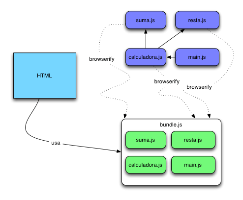

Esta página contiene las respuestas al challenge propuesto por Betterware.
Para crear una rama desde la terminal se utiliza el comando "git
checkout -b [nombre de tu rama]".
Con eso pasas a la nueva rama y puedes empezar a trabajar en ella.
Un bundle sirve para agrupar todos los ficheros de JavaScript en uno solo. Así el navegador no necesita hacer varias peticiones HTTP.

¿Cómo funciona un enfoque de virtual DOM? . En este caso el framework o
librería que corresponda se encarga de tener una copia de nuestro
árbol DOM simplificado en memoria a la cual se denomina VirtualDOM. Una vez
que tenemos una versión virtual del DOM el framework se encarga de
estar pendiente de los cambios que generan sobre él. Y esto da la capacidad de
ver los cambios entre un estado A y un estado B cuando actualizamos
la
información. Con esto solo cambiamos una pequeña parte del DOM y el
framework o librería nos apoya a actualizar el DOM sin necesidad de
redibujar
toda la página. Esto ayuda a que el rendimiento del navegador
se incremente de forma considerable.
Estuve leyendo un poco de librerías reactivas he manejado React.Js y Next.js con archivos .jsx y .mdx. Pero la librería reactiva RxJs no he tenido la oportunidad de manejarla pero estoy abierta a utilizar esta tecnología.
La metodología BEM que en términos simples se refiere a: Bloque: entidad independiente dentro de un documento web generalmente será un componente o módulo, estos pueden ser indentados, es decir bloques pueden contener bloques. Elemento: hace referencia a un marcado o “elemento” descendente de un bloque, estos no puede utilizarse por sí solos sin el contexto de un bloque específico. Modificador: hace referencia al estado o versión diferente de un bloque o un elemento, cabe decir que este estado puede ser opcional.
Para este punto indirectamente utilizaba algo parecido esta nomenclatura al momento de crear mis clases, en algunos de mis últimos proyectos.
Mis proyectos que más me agradan y de los cuales me siento orgullosa llevan un poco de mí, y también un poco de mis compañeros de trabajo. Los 3 que más me han gustado son: